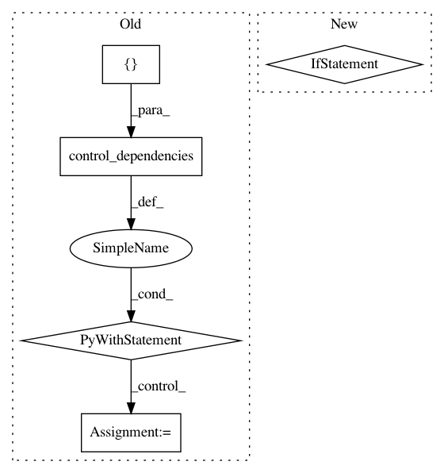

d1ac7b831ad36cd0e4bdd7980819f83208345148,gpflow/expectations.py,,_expectation,#Any#Any#Any#Any#Any#,547
Before Change
def _expectation(p, kern, feat, none2, none3):
if not kern.on_separate_dimensions:
raise NotImplementedError("Product currently needs to be defined on separate dimensions.") // pragma: no cover
with tf.control_dependencies([
tf.assert_equal(tf.rank(p.var), 2,
message="Product currently only supports diagonal Xcov.", name="assert_Xcov_diag"),
]):
_expectation_fn = lambda k: _expectation(p, k, feat, None, None)
return functools.reduce(tf.multiply, [_expectation_fn(k) for k in kern.kern_list])
@dispatch(DiagonalGaussian, kernels.Product, InducingPoints, kernels.Product, InducingPoints)
@quadrature_fallback
def _expectation(p, kern1, feat1, kern2, feat2):
if feat1 != feat2:
After Change
if feat1 != feat2:
raise NotImplementedError("Different features are not supported.")
if kern1 != kern2:
raise NotImplementedError("Calculating the expectation over two "
"different Product kernels is not supported.")
kern = kern1
feat = feat1
if not kern.on_separate_dimensions:
In pattern: SUPERPATTERN
Frequency: 3
Non-data size: 5
Instances
Project Name: GPflow/GPflow
Commit Name: d1ac7b831ad36cd0e4bdd7980819f83208345148
Time: 2018-02-07
Author: alex.ialongo@gmail.com
File Name: gpflow/expectations.py
Class Name:
Method Name: _expectation
Project Name: microsoft/nni
Commit Name: 9d468d2c742491af2d2f506c648ddc95ffea6a64
Time: 2019-10-20
Author: lanny@mail.hfut.edu.cn
File Name: src/sdk/pynni/nni/compression/tensorflow/builtin_pruners.py
Class Name: SensitivityPruner
Method Name: calc_mask
Project Name: tryolabs/luminoth
Commit Name: 4ec258a2261a943910a34be1b7d53a646f089367
Time: 2018-04-16
Author: joaquin.alori@gmail.com
File Name: luminoth/train.py
Class Name:
Method Name: run